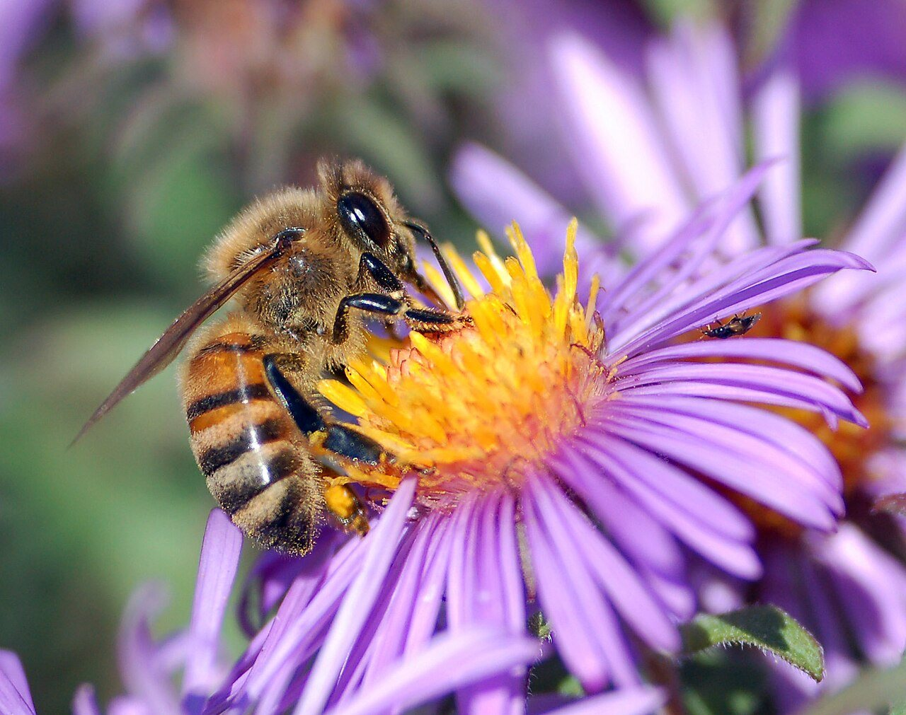
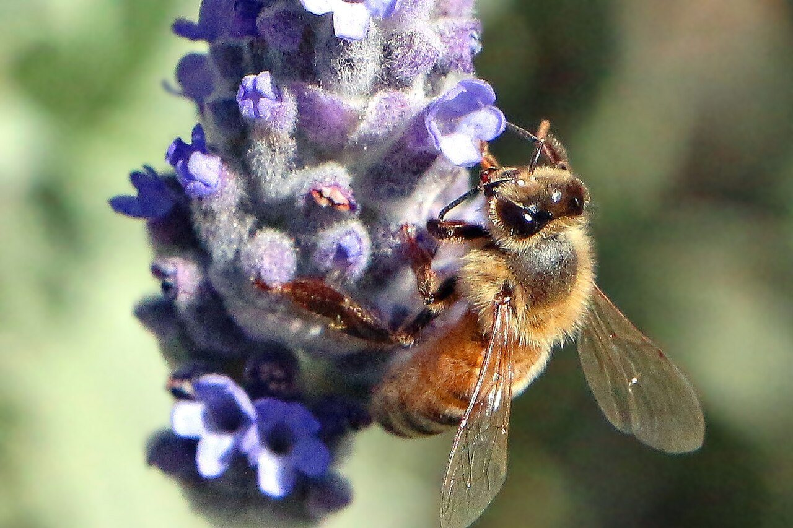
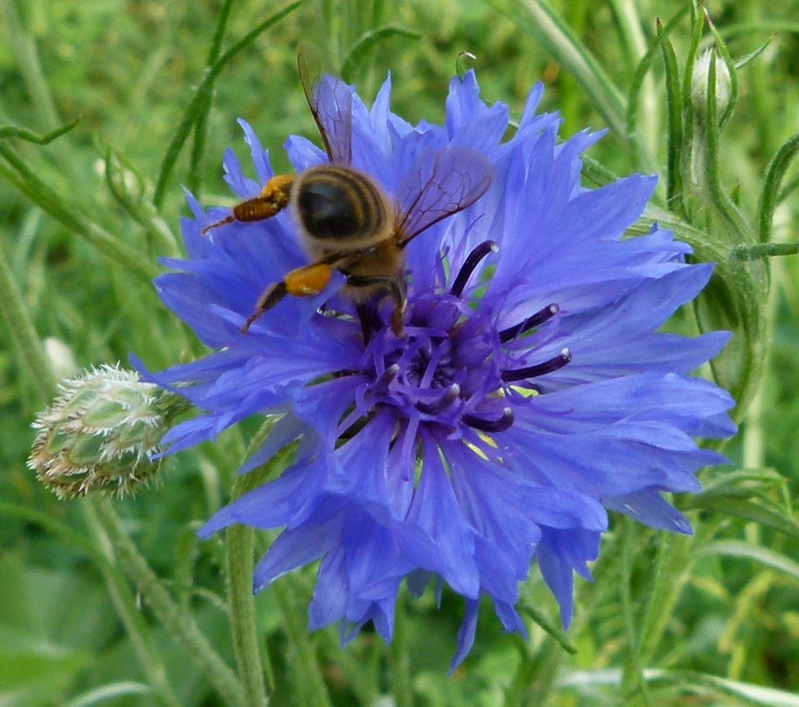
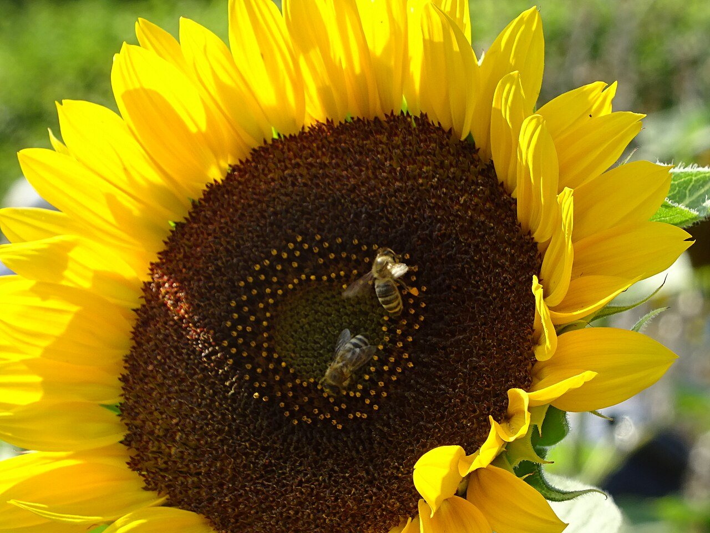
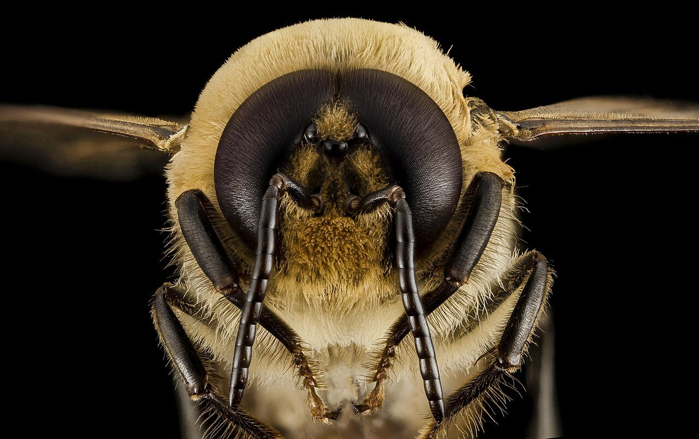
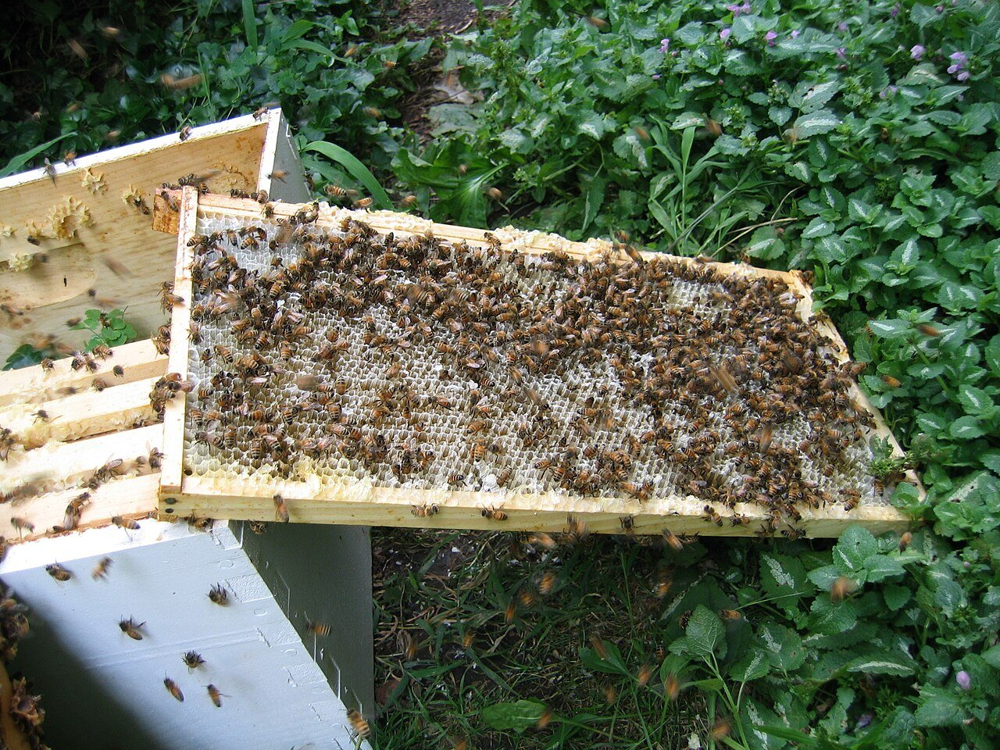
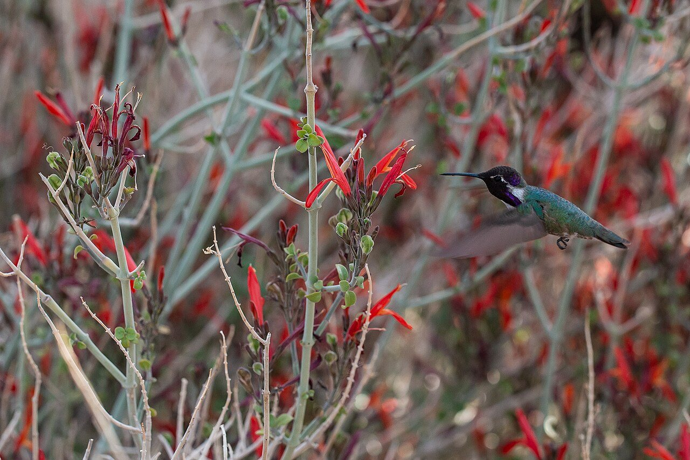

自然・科学 Nature & Scienceハチは、世界をどう見ている？
同じ花を見ていても、ミツバチの目に映る景色は、人とはまるで違います。赤が見えにくく、代わりに人には見えない光が見える。光の範囲をくらべた図と、花の模様の模式図で、ハチの目をのぞいてみませんか。
2026.10.22 UP 約5分で読める 文：SOMOSOMO編集部
写真：European honey bee extracts nectar／John Severns（パブリックドメイン）
青い色紙の上に、砂糖水を入れた小さなガラス皿をのせる。そのまわりには、濃さの違う灰色の紙を何枚も並べる。1910年代、オーストリア出身の動物学者カール・フォン・フリッシュは、こんな実験でミツバチを試しました。灰色の紙をまぜたのは、ハチが色を見ているのか、ただ明るさを見ているのかを確かめるためです。
青い紙で砂糖水をもらうことを覚えたハチは、皿を空にしても、青い紙へまっすぐ飛んでいきました。ハチは明るさではなく、色そのものを見分けている 。当時は「虫には色がわからない」という説もあったなかで、この実験はその反証になりました。では、ハチの目に映る世界は、私たちと同じなのでしょうか。
In a word
身近なミツバチの場合、人とは見える光の範囲がずれていて 、赤は見えにくく、人には見えない紫外線 が見えます。目のつくりも見え方も、花を探して空を飛ぶ暮らしに合っています。
01
Shifted Colors
赤は見えにくく、紫外線が見える
色を見分けるのは、目の奥にある「視細胞」です。人は、主に赤・緑・青によく反応する3種類の視細胞で色を感じています。ミツバチの視細胞も3種類ですが、組み合わせが違います。
よく反応するのは紫外線・青・緑 。それぞれ感度のピークは、光の波長（光の色を決める波の長さ）で約340・約440・約540ナノメートル（1ナノメートルは100万分の1ミリ）とされています。
そのぶん、見える光の範囲が人とずれています。人が見えるのは波長でおよそ390〜750ナノメートル。ミツバチはおよそ300〜650ナノメートルです。人より短い紫外線の側が見えるかわりに、長い側の赤は、ほとんど見えません 。
Fig.01 人とミツバチの、見える光の範囲
紫外線
紫・青
緑
黄・橙
赤
人の目 約390〜750nm
ミツバチの目 約300〜650nm
ミツバチの3種類の視細胞（感度の山）
紫外線
青
緑
300 400 500 600 700
光の波長（nm＝ナノメートル）
見どころは、2本の帯の左右のずれ。ミツバチの帯の赤い部分は、人には見えない紫外線です。ミツバチの帯は人より左（紫外線）へはみ出し、右の赤の手前で終わります。範囲や山の形はわかりやすくした模式図で、資料によって数字には幅があります。
フリッシュの実験でも、このことは表れていました。青や黄色ではうまくいったのに、赤い紙で覚えさせると、ハチは赤い紙と濃い灰色の紙を取り違えた と伝えられています。ハチにとって赤は、色というより「暗い灰色」に近いと考えられています。

青紫は、ハチによく見える色 ラベンダーのような青や紫の花は、ハチの青の視細胞によく反応する、見つけやすい色です。写真：Honeybee on lavender ／Gronk Oz（2013年、CC0）
02
Hidden Patterns
花びらには、人に見えない「的」が描かれている
紫外線が見えると、花の見え方も変わります。人の目には一色に見える花びらでも、紫外線で写すと、中心だけが暗く沈んだ「的」のような模様 が浮かび上がることがあります。紫外線を吸う部分と、はね返す部分があるためです。
こうした模様は「ネクターガイド（蜜のありかを示す目印）」と呼ばれ、多くの場合、蜜や花粉のある中心へ虫を導くと考えられています。たとえばキンポウゲのなかまには、紫外線で見たときだけ現れる模様をもつものがあります。
Fig.02 同じ花も、ハチの目ではこう変わる
人の目で見ると
ハチの目で見ると（イメージ）
花びらは一色に見える
根もとが暗い「的」の模様
暗い部分は紫外線を吸っている
見どころは、右の花の中心へ向かって暗くなる部分。人には見えない模様が、蜜のある中心（中心の丸）への目印になるとみられています。ハチに実際どんな色に見えるかは表せないので、明るさの違いだけで描いた模式図です。


青い花と、黄色い花 左は青いヤグルマギク、右はヒマワリ。ハチには、人のような赤の視細胞がないので、黄色は主に緑の視細胞でとらえています。同じ「黄色」の花でも、紫外線もはね返す花と、はね返さない花とでは、ハチには別の色に見えるとされます。写真：Apis mellifera on centaurea cyanus ／Dinkum（2012年、CC0）、2 bees on sunflower ／rente42（2017年、パブリックドメイン）
03
Thousands of Eyes
5,000あまりの小さな目で、粗く、広く見る
ハチの顔の両側にある大きな目は「複眼」です。小さな目「個眼（こがん）」が、ハチの巣のようにびっしり並んでできています。2013年の研究では、ミツバチの働きバチの複眼の個眼は平均で約5,400個 。オスはずっと多く、約1万個でした。
個眼の1つひとつが、景色の小さな1点を受け持ちます。そのため、ハチの見る景色は、粗いモザイクのようなものだと考えられています。1929年の研究は、いちばんよい条件で比べても、人の目の細かさはミツバチの約100倍 だと見積もりました。そのかわり複眼は、頭の両側から広い範囲を一度に見渡せます。
Fig.03 ミツバチの顔の、どこが何をしている？
複眼 小さな個眼が集まった大きな目。色や形、動きを見る。働きバチで片目に約5,400個の個眼がある触角 においや手ざわりを感じとる。花を探すときは、目と鼻の両方を使っている口（口吻） のびる舌で蜜を吸う。目印をたどって花の中心に来たら、ここの出番
見どころは、顔の横幅いっぱいに広がる複眼の大きさ。頭のてっぺんには「単眼」という小さな目も3つありますが、この写真では毛に隠れています。写真：Apis mellifera, F, face ／Sam Droege, USGS Bee Inventory and Monitoring Lab（2013年、パブリックドメイン）

オスは、目でメスを探す ミツバチのオスの複眼は、頭の上でつながりそうなほど大きく、個眼は約1万個。空を飛ぶ女王バチを見つけるのに役立つと考えられています。写真：Honeybee drone, m, face ／USGS Bee Inventory and Monitoring Lab（2014年、パブリックドメイン）
04
Compass in the Sky
青空のかけらから、太陽の位置がわかる
フリッシュはその後、ミツバチが巣の中で「ダンス」をして、仲間に餌場の方角と距離を伝えていることを突き止めます。方角の基準は太陽です。ところが、ハチは太陽が直接見えなくても、青空が少し見えていれば迷わない ことがわかりました。
手がかりは「偏光」です。光は波のように揺れながら進みますが、青空の光は、太陽の位置によって決まる向きに、その揺れがそろっています。人の目にはわかりませんが、ハチは複眼でこの揺れの向きを感じとり、空の一部を見るだけで太陽の位置を読みとる とみられます。フリッシュはこうした研究で、1973年にノーベル生理学・医学賞を受けました。

ダンスの舞台は、巣板の上 暗い巣の中で、ハチは垂直に立った巣板の上で踊ります。巣板の「真上」を太陽の方角に見立て、餌場がそこから何度ずれているかを、踊る向きで伝えるのです。写真は、蜜をしぼった後の巣板を掃除するハチたちです。写真：Honey Bees on Comb ／Killerlimpet（2008年、パブリックドメイン）
05
By the Numbers
オスの目は、働きバチの2倍近い
9,993個 ミツバチのオスの複眼1つの個眼の数（平均）。女王を目で探すためStreinzer ほか、2013年。
5,375個 働きバチの複眼1つの個眼の数（平均）Streinzer ほか、2013年
283種 ハチの目で花の色を調べた、ブラジルの山地の草原の植物の数2019年の研究。下の「ここが面白い！」

赤い筒の花と、ハチドリ アメリカ・カリフォルニア州のジョシュアツリー国立公園で、赤い花のチュパローサ（キツネノマゴのなかまの低木）にやってきたハチドリ。長いくちばしは、細い筒の奥の蜜にちょうど届きます。写真：Hummingbird and Chuparosa ／NPS Photo, Carmen Aurrecoechea, Joshua Tree National Park（2022年、パブリックドメイン）
Here's the Fun Part
ここが面白い！
ハチに赤が見えにくいなら、赤い花は損をしているのでしょうか。実は逆かもしれません。アメリカ大陸などでは、ハチドリが花粉を運ぶ花に、赤い筒形の花が多く見られます。そしてハチドリには赤がよく見えます 。
2019年、ブラジルの山地の草原で花283種を調べた研究では、ハチドリが花粉を運ぶ花の多くが、ハチの目では色の目立たない花だと見積もられました。ハチは花粉を運ばずに蜜だけ持っていくこともあるため、ハチに見つかりにくい色は、蜜を守る「フィルター」になる という説があります。
花の色は、誰に見てほしいかだけでなく、誰に見つかりたくないかでも決まっている──のかもしれません。
次に花壇の前を通ったら、ハチが集まっている花と、素通りされている花の色をくらべてみてください。同じ景色の中に、ハチだけが見ている地図が重なっています。